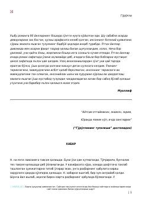

GTotalitar tuzum davridagi idora muhiti va inson ruhiyatini ochib beruvchi roman.
Ushbu asarda 90-yillarning boshlarida yakuniga yetkazilgan, totalitar tuzumning og'ir muhiti va inson ruhiyatiga ta'siri badiiy tarzda aks ettirilgan. Roman qahramoni N. ning hayoti va boshidan kechirgan voqealari orqali o'sha davrning ziddiyatlari ochib beriladi.